Book Trusted Local Gardeners Near You — Instantly.

Background-checked and reviewed regularly.
No hidden fees. Fixed upfront costs.
Real help from our team, every step of the way.
See feedback from verified customers in your area.
🌱 Lawn Mowing – Professional grass cutting with precision edging and debris clearing.
🌱 Hedge Trimming – Neat, tidy hedges shaped to perfection, enhancing curb appeal.
🌱 Garden Clearance – Remove overgrowth, weeds, and waste for a fresh outdoor space.
✅ All services are performed by local gardeners equipped with professional tools. Whether you're maintaining a small urban garden or preparing a larger outdoor space for summer, Green & Clean makes it easy to keep it thriving.
Are you a skilled gardener looking for consistent, local work? Green and Clean helps you connect with clients in your area. We handle bookings, payments, and customer support — you focus on the job.
"Green and Clean made it so easy to find someone to clear up our garden before a party. Super friendly gardener and the job was flawless!"
– Sarah M., Leeds"As a gardener, I get steady jobs and happy clients. Couldn’t be simpler."
– James R., Contractor in ManchesterEvery gardener passes a background check, ID verification, and initial job reviews.
We currently serve most major towns and cities across England, Wales, and Scotland.
Our support team is on hand to resolve any issues within 48 hours — satisfaction guaranteed.